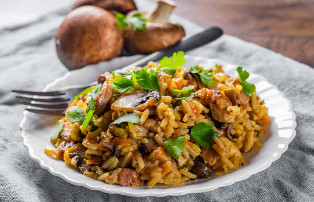

Jollof Rice

Jollof rice is a popular West African dish that is made with rice, tomatoes, onions, and a variety of spices.
It is often prepared with meat or vegetables, and can be customized to suit individual preferences.
The dish is known for its rich, savory flavor and vibrant red color, and is often enjoyed at social gatherings and celebrations.
Jollof rice is a staple dish in many West African countries, and has gained popularity in other parts of the world in recent years.
Ingredients
- Rice
- Tomatoes
- Onions
- Bell peppers (red or green)
- Scotch bonnet peppers (or other hot pepper)
- Tomato paste
- Cooking oil (such as vegetable oil or palm oil)
- Chicken or beef stock (or water)
- Garlic
- Ginger
- Thyme
- Curry powder
- Salt
- Seasoning cubes (such as Maggi or Knorr)
Steps
- Rinse the rice several times and set aside to drain.
- Blend the tomatoes, onions, red bell pepper, green bell pepper, and scotch bonnet peppers together in a blender or food processor until smooth.
- Heat the oil in a large pot or Dutch oven over medium heat. Add the blended tomato mixture and cook for about 10-15 minutes, stirring occasionally, until the mixture has reduced and thickened.
- Add the tomato paste, garlic, ginger, thyme, curry powder, salt, and seasoning cubes to the pot and stir well to combine. Cook for an additional 2-3 minutes.
- Add the rice to the pot and stir well to combine with the tomato mixture.
- Pour the chicken or beef stock (or water) over the rice and stir well. Increase the heat to high and bring the mixture to a boil.
- Reduce the heat to low, cover the pot, and simmer for about 20-25 minutes or until the rice is tender and has absorbed all the liquid.
- Remove the pot from the heat and let it sit for about 5 minutes before fluffing the rice with a fork.
- Serve hot and enjoy your delicious jollof rice!